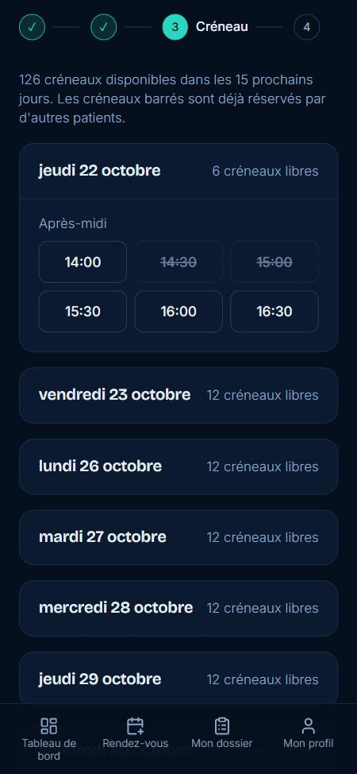
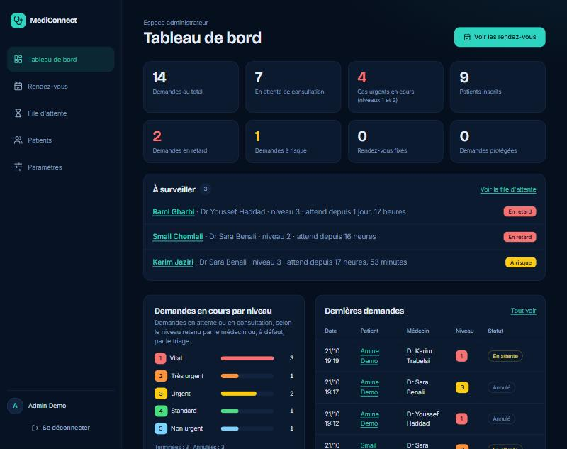
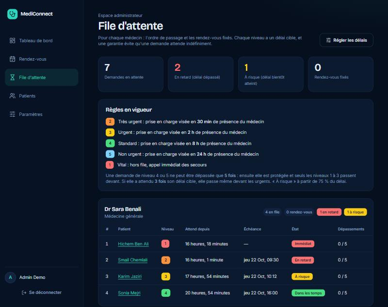
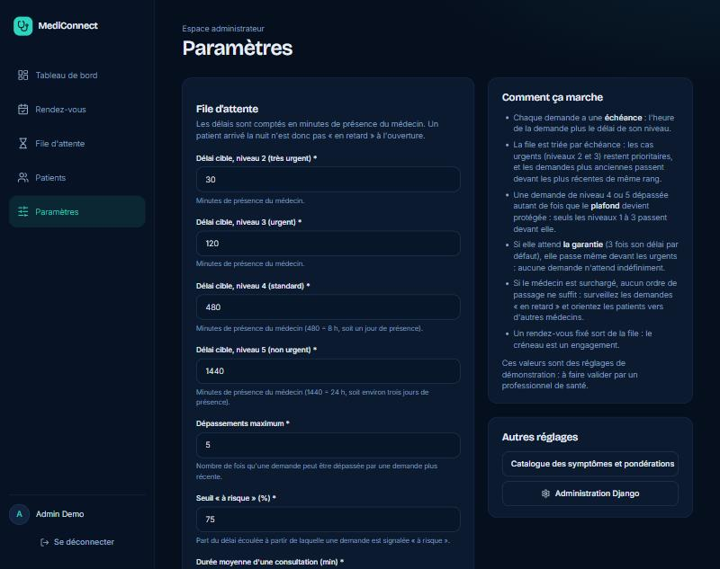

Comment MediConnect évite qu'un patient attende indéfiniment, et ce que l'administrateur peut suivre et régler.
Le problème. Jusqu'ici, la file d'un médecin était triée par niveau d'urgence, puis heure d'arrivée. Un patient peu urgent (niveau 4 ou 5) passait derrière chaque nouveau cas plus urgent. Tant que de nouveaux cas urgents arrivaient, il n'était jamais vu : c'est ce qu'on appelle la famine.
La solution. Chaque demande reçoit une échéance (l'heure de la demande plus le délai cible de son niveau, comptée en temps de présence du médecin). La file est triée avec cinq groupes de passage, un plafond de dépassements et une garantie : une demande protégée qui a attendu trois fois son délai passe même devant les urgents (hors cas vital).
Exemple : Sana demande un rendez-vous lundi, avec un cas non urgent (niveau 5). Chaque jour, de nouveaux cas plus urgents arrivent. Avec le tri « niveau puis arrivée », Sana est toujours derrière eux.
| Moment | File avant le passage du médecin | Patient vu |
|---|---|---|
| Lundi 9 h | Sana (5) | Sana, s'il n'y a qu'elle |
| Lundi 9 h 20 | Sana (5) · Amine (2) | Amine : plus urgent, passe devant |
| Mardi | Sana (5) · Leïla (3) · Karim (2) | Karim, puis Leïla |
| Mercredi, jeudi… | Sana (5) · de nouveaux cas (2, 3, 4) | Toujours un cas plus urgent avant Sana |
La file doit être « priorisée par urgence » (cas graves en premier) mais aussi un parcours de soins sans « parcours interrompu ». Il faut donc concilier deux exigences : les urgents passent d'abord, et personne n'est oublié.
| Niveau | Délai cible par défaut | Lecture |
|---|---|---|
| 1 · Vital | immédiat | Hors file : appel du 190 / 15 / 112 |
| 2 · Très urgent | 30 min | Tête de file |
| 3 · Urgent | 2 h | Consultation dans l'heure ou presque |
| 4 · Standard | 8 h | Environ un jour de présence du médecin |
| 5 · Non urgent | 24 h | Environ trois jours de présence |
Ces délais sont des réglages de démonstration, modifiables dans la page Paramètres du back-office. Ils doivent être validés par un professionnel de santé avant tout usage réel. À titre de repère, le Manchester Triage System, utilisé aux urgences hospitalières, vise 0, 10, 60, 120 et 240 minutes selon la couleur.
Les délais comptent uniquement les heures où le médecin travaille. Un patient qui demande à 22 h n'est pas « en retard » à 8 h le lendemain. Sans cela, un cas très urgent arrivé la nuit serait déjà en retard à l'ouverture (la simulation d'origine montrait jusqu'à 16 h d'attente nocturne). Si un médecin n'a pas d'horaires, le temps réel est utilisé.
À l'intérieur d'un groupe, la demande dont l'échéance est la plus proche passe en premier ; à échéance égale, la plus ancienne.
Dans les tempsÀ risque : 75 % du délai écouléEn retard : délai dépasséRendez-vous fixé
Prise en charge estimée = maintenant + (position − 1) × durée moyenne d'une consultation (20 minutes par défaut), en temps de présence du médecin.
Médecin présent de 9 h à 12 h et de 14 h à 17 h, du lundi au vendredi (6 h par jour). Sana, niveau 5, demande lundi à 9 h.
| Quand | Ce qui se passe | Ce que voit Sana |
|---|---|---|
| Lundi 9 h | Échéance = 24 h de présence plus tard, soit jeudi 17 h. | « 1re sur 1 », dans les temps, jauge à 0 %. |
| Lundi à mardi | Cinq cas arrivés après elle sont vus avant elle (niveaux 2 et 3 : ils sont prioritaires). | « 5 personnes plus urgentes sont passées devant vous. » |
| Après le 5e passage | Sana devient protégée : plus aucune demande de niveau 4 ou 5 ne la double. | « Votre demande est protégée : seuls les cas urgents peuvent encore passer devant vous. » |
| Mercredi 17 h | 18 h de présence écoulées (75 % du délai) : état à risque. | Jauge jaune, message d'avertissement. |
| Jeudi 17 h | Délai dépassé : état en retard. Le back-office l'affiche dans « À surveiller ». | Jauge rouge, « Nous avons du retard… voir d'autres médecins ». |
| 3 × le délai (72 h de présence) | Garantie : Sana passe devant tous les cas, sauf un cas vital. | 1re place. |
Dans la pratique, la simulation montre des attentes bien plus courtes que cette borne : même à 100 % de charge, l'attente maximale d'un patient de niveau 5 est de 121 h (5,0 j).
Chaque demande en cours affiche un bloc de suivi : état, place dans la file, jauge du délai cible, prise en charge estimée et, le cas échéant, le nombre de personnes passées devant. L'état est toujours écrit en toutes lettres (jamais la couleur seule) et la jauge est annoncée aux lecteurs d'écran.
La liste des médecins montre le prochain créneau libre et le nombre de patients en attente. Le parcours compte quatre étapes : Médecin, Symptômes, Créneau, Résultat. Dans la grille des créneaux, un créneau déjà réservé reste visible mais barré et non sélectionnable.

Le menu de l'administrateur compte cinq entrées (lisible aussi sur mobile) : Tableau de bord, Rendez-vous, File d'attente, Patients et Paramètres (qui regroupe le catalogue des symptômes et l'administration Django).
Une deuxième rangée d'indicateurs montre les demandes en retard, à risque, les rendez-vous fixés et les demandes protégées. Sous elle, la liste À surveiller classe les demandes en retard d'abord, puis celles à risque.

Pour chaque médecin : l'ordre de passage (position, niveau, ancienneté, échéance, état, dépassements) et ses rendez-vous fixés. Un rappel des règles en vigueur est affiché en haut de page.

L'administrateur règle la file sans toucher au code. Chaque champ est validé : les délais doivent augmenter avec le niveau, et chaque valeur a des bornes. Un bouton rétablit les valeurs par défaut.
| Paramètre | Défaut | Bornes |
|---|---|---|
| Délai cible niveau 2 / 3 / 4 / 5 (minutes de présence) | 30 / 120 / 480 / 1440 | 5 minimum, croissant avec le niveau |
| Dépassements maximum avant protection | 5 | 1 à 20 |
| Seuil « à risque » (% du délai) | 75 % | 50 à 95 % |
| Durée moyenne d'une consultation (minutes) | 20 | 5 à 120 |
| Garantie : passage prioritaire après (× le délai) | 3 | 2 à 10 |

Les pages du back-office sont réservées aux administrateurs : un visiteur non connecté est renvoyé vers la connexion et un patient reçoit une erreur 403 (vérifié par des tests et sur la base réelle).
Un médecin consulte 8 h par jour, 3 patients par heure (24 par jour), sept jours sur sept. Les demandes arrivent au hasard, à toute heure, avec 15 % de niveau 2, 25 % de niveau 3, 35 % de niveau 4 et 25 % de niveau 5. Chaque scénario dure 90 jours. La simulation utilise le vrai code du projet (Triage.trier_file, comptage des dépassements) et le compare à la règle d'origine. « Hors délai » compte les patients vus après leur délai cible, mesuré en temps de présence du médecin.
| Niveau | Règle d'origine | Règle finale | ||||
|---|---|---|---|---|---|---|
| Attente moy. | Attente max. | Hors délai | Attente moy. | Attente max. | Hors délai | |
| Très urgent | 5.8 h | 16 h | 7 % | 5.8 h | 16 h | 8 % |
| Urgent | 6.0 h | 18 h | 2 % | 6.0 h | 17 h | 1 % |
| Standard | 7.6 h | 20 h | 0 % | 8.2 h | 22 h | 0 % |
| Non urgent | 11.3 h | 44 h | 0 % | 10.4 h | 40 h | 0 % |
| Niveau | Règle d'origine | Règle finale | ||||
|---|---|---|---|---|---|---|
| Attente moy. | Attente max. | Hors délai | Attente moy. | Attente max. | Hors délai | |
| Très urgent | 4.9 h | 16 h | 12 % | 4.9 h | 16 h | 12 % |
| Urgent | 5.9 h | 18 h | 3 % | 5.9 h | 18 h | 2 % |
| Standard | 8.0 h | 27 h | 0 % | 12.8 h | 31 h | 7 % |
| Non urgent | 25.6 h | 78 h (3,3 j) | 1 % | 19.0 h | 61 h (2,5 j) | 0 % |
| Niveau | Règle d'origine | Règle finale | ||||
|---|---|---|---|---|---|---|
| Attente moy. | Attente max. | Hors délai | Attente moy. | Attente max. | Hors délai | |
| Très urgent | 5.7 h | 16 h | 14 % | 5.8 h | 16 h | 16 % |
| Urgent | 6.3 h | 18 h | 7 % | 6.3 h | 18 h | 6 % |
| Standard | 7.9 h | 21 h | 0 % | 26.1 h | 75 h (3,1 j) | 47 % |
| Non urgent | 77.0 h | 219 h (9,1 j) | 51 % | 51.4 h | 121 h (5,0 j) | 34 % |
| Niveau | Règle d'origine | Règle finale | ||||
|---|---|---|---|---|---|---|
| Attente moy. | Attente max. | Hors délai | Attente moy. | Attente max. | Hors délai | |
| Très urgent | 5.7 h | 16 h | 14 % | 6.1 h | 18 h | 31 % |
| Urgent | 6.4 h | 18 h | 6 % | 6.9 h | 29 h | 17 % |
| Standard | 8.2 h | 27 h | 0 % | 43.3 h | 88 h (3,7 j) | 62 % |
| Non urgent | 127.5 h | 313 h (13,0 j) | 62 % | 76.7 h | 192 h (8,0 j) | 55 % |
nettement meilleurnettement moins bon
Plusieurs règles ont été comparées avec le même simulateur (60 jours, charge de 100 %) avant de retenir la règle finale (chiffres d'une simulation de 60 jours, distincte de celle du 7.2) :
| Variante | Cas urgents (niveau 2) hors délai | Attente max. niveau 5 | Verdict |
|---|---|---|---|
| A · les demandes protégées passent devant tous, sauf le vital | 58 % | 71 h | Trop de retard pour les urgents |
| B · le niveau 2 passe avant les protégées | 15 % | 98 h | Le niveau 3 est pénalisé (59 %) |
| C · les niveaux 2 et 3 passent avant les protégées | 15 % | 121 h | Protège les urgents, mais sans garantie absolue |
| E · protégée et en retard : passe d'abord | 40 % | 89 h | Garantie forte, mais coûte aux urgents |
| Finale · C + garantie à 3 × le délai, réglable | 15 % | 121 h | Retenue : urgents protégés et borne absolue |
progressbar), boutons nommés pour les lecteurs d'écran, navigation sans souris, affichage vérifié sur mobile.Une date s'affichait « vCETThu, 22 Oct… » au lieu de « vers 10 h 44 » : dans les formats de date Django, les lettres de « vers » sont des codes. C'est corrigé et couvert par un test.
patients/medecins_test.py) en attendant le module Médecins ; la durée de consultation (20 min) est une estimation.Triage.enregistrer_depassements).| Fichier | Rôle |
|---|---|
patients/file_attente.py | Logique pure : temps de présence, échéance, états, groupes de passage, dépassements, attente estimée |
patients/suivi.py | Annote les demandes (place, délai, estimation) ; mêmes chiffres côté patient et back-office |
patients/planning.py | Créneaux : génération, grille avec créneaux pris, regroupement par jour |
patients/models.py | Triage (nb_depassements, creneau, tri de la file), ReglageTriage (paramètres modifiables) |
patients/views.py | Tableau de bord, résultat, liste des médecins, choix du créneau avec double verrou |
patients/templatetags/suivi_filtres.py | Filtres d'affichage (durées, classes d'état) |
backoffice/views.py, forms.py, stats.py | File d'attente, paramètres, indicateurs, comptage des dépassements |
patients/migrations/0007…0008 | ReglageTriage, nb_depassements, garantie |
docs/simulation_file_attente.py | Script de simulation (voir ci-dessous) |
Tests automatiques : python manage.py test. Simulation (quelques minutes) : python docs/simulation_file_attente.py, qui écrit resultats_simulation.json dans le dossier courant. Les contrôles sur base réelle utilisent des scripts jetables (non conservés dans le dépôt).
| Échéance | Heure avant laquelle la demande devrait être prise en charge. |
| Temps de présence | Heures où le médecin travaille ; seules elles comptent dans les délais. |
| Dépassement | Une demande arrivée plus tard est prise en charge avant celle-ci. |
| Protégée | Demande dépassée autant de fois que le plafond ; elle ne peut plus l'être par un niveau 4 ou 5. |
| Garantie | Passage prioritaire d'une demande protégée après un multiple de son délai (3 par défaut). |
| Famine | Situation où une demande n'est jamais traitée parce que d'autres passent toujours devant. |